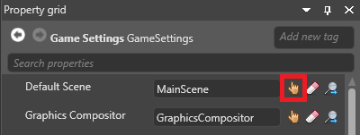
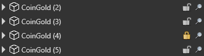

シーンの管理
初級 プログラマー デザイナー
シーンとエンティティは階層状になっており、先頭にルート シーンがあります。この階層は、シーン エディターの左側にあるエンティティ ツリーに表示されます。

ルート シーンには、ゲームのすべてのシーンとエンティティが含まれます。他のシーンやエンティティが使用する共通エンティティも含まれます (［game logic］スクリプトなど)。
シーンはそれぞれ異なるフォルダーに保持されます。つまり、複数の開発者が他の開発者の作業を上書きすることなく共同作業できます。
Note
シーンを実行時にロードすると、子シーンは自動的にロードされません。コードで子シーンをロードする必要があります。詳細については、「シーンをロードする」を参照してください。
親シーンと子シーンを設定する
親シーンと子シーンの間の関係は、親ではなく子で設定されます。つまり、子シーンは親シーンについて知っていますが、親シーンは子シーンについて知りません。
シーンを別のシーンの子にするには複数の方法があります。
- シーン エディターのエンティティ ツリー (既定では左) で、シーンをそれの親にするシーンにドラッグします。
*［Asset view］(既定では下部) のシーンを、エンティティ ツリー内にある親にするシーンにドラッグします。
シーンの［Property grid］(既定では右) の［Parent］で、そのシーンの親にするシーンを指定します。
既定のシーンを設定する
既定のシーンは、Stride が実行時にロードするシーンです。既定のシーンは、ゲーム設定アセットで設定できます。
［Solution explorer］(既定では左下のペイン) で、［Assets］フォルダーを選択します。

［Asset view］(既定では下部のペイン) で、［GameSettings］アセットを選択します。

［Property grid］(既定では右側のペイン) で、［Default Scene］の隣の
 (［Select an asset］) をクリックします。
(［Select an asset］) をクリックします。
［Select an asset］ウィンドウが開きます。
既定のシーンを選択し、［OK］をクリックします。
このシーンが実行時にロードされます。
ゲーム設定アセットの詳細については、「ゲームの設定」を参照してください。
アクティブなシーンを設定する
アクティブなシーンは、エンティティをシーン エディターにドロップしたときにエンティティが追加されるシーンです。エンティティは子としてアクティブなシーンに追加されます。
アクティブなシーンを設定するには、エンティティ ツリー (既定では左側) でシーンを右クリックして［Set as active scene］を選択します。

アクティブなシーンは実行時にどのような影響も及ぼしません。
シーンとエンティティをロックする
メイン ウィンドウで選択できないように、シーンとエンティティをロックできます。これは、シーンに多くのものが含まれるときに便利です。その場合でも、エンティティ ツリーではシーンとエンティティを選択できます。
シーンまたはエンティティをロックまたはロック解除するには、エンティティ ツリーで南京錠アイコンをクリックします。
Tip
シーンをロックすると、そのすべての子シーンとエンティティもロックされます。エンティティと共にをその子エンティティをロックするには、Ctrl キーを押しながら南京錠アイコンをクリックします。
ロックされている項目には、金色の施錠された南京錠のアイコンがエンティティ ツリーに表示されます。

シーン エディターでシーンをロードおよびアンロードする
シーン エディターで、シーンを (そのすべての子シーンおよびエンティティと共に) ロードおよびアンロードできます。エディターでのシーンのアンロードは、たとえば、編集ビューから不要なものを取り除いたり、エディターのパフォーマンスをよくしたりする場合に役に立ちます。
次のスクリーンショットでは、子シーンをロードした状態とアンロードした状態のルート シーンを示します。ルート シーンには、スカイボックス、スクリプト、アステロイド、プレイヤー キャラクターなど、すべてのシーンで使用されるエンティティが含まれます。子シーンは、レベルのセクションです。

シーンをロードまたはアンロードするには、シーン エディターの左側にあるエンティティ ツリーで、ロードまたはアンロードするシーンの隣にある目のアイコンをクリックします。

シーンを移動する
シーンはエンティティではないので、変換コンポーネントを持っていません。ただし、［Offset］プロパティを使用して、シーンを移動できます。
実行時にシーンを移動するには、以下を使用します。
myScene.Offset = new Vector3(x, y, z);
myScene はシーンの名前に、x,y,z はシーンの移動先の XYZ 座標に置き換えます。